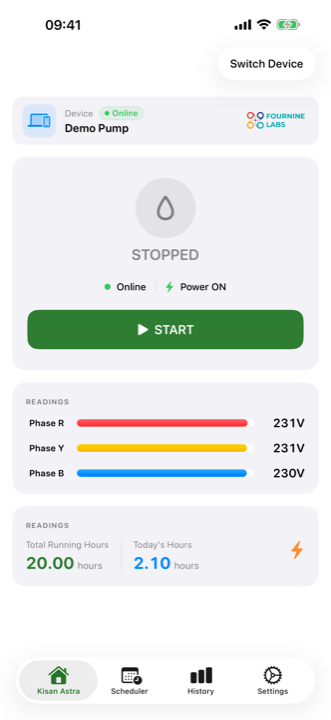
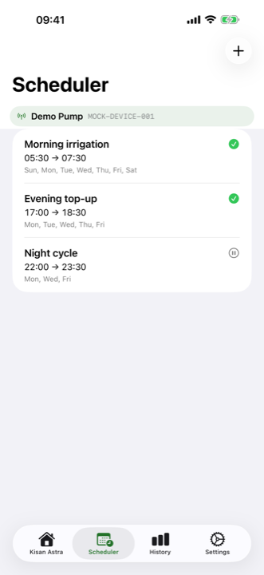
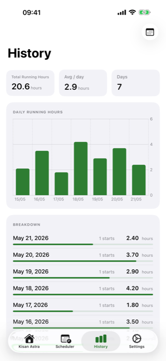

Live monitoring
See power status, pump status and live R, Y, B phase voltages — refreshed every few seconds straight from the field.
Smart starter + free mobile app
Kisan Astra turns your three-phase agricultural pump into a smart motor you can watch and control from your phone — from home, the market, or the next district.
Works fully in English, తెలుగు & हिन्दी
The product
Kisan Astra is a smart starter that an electrician fits next to your existing pump starter, plus a free mobile app. The unit reads power and voltage on all three phases, switches the motor on and off, and stays connected to your phone over the mobile network.
Getting started
A trained electrician installs the Kisan Astra unit beside your pump's starter panel. Your wiring and motor stay as they are.
Download the app, sign in with your mobile number and OTP, and scan the QR code on the unit. Your pump appears in the app within minutes.
Watch live voltage, switch the motor on or off, set schedules, and get alerts — no more trips to the field just to flip a switch.
Features
See power status, pump status and live R, Y, B phase voltages — refreshed every few seconds straight from the field.
Start or stop the pump from anywhere with a single tap.
Run the pump at fixed times — every day, selected days, one time, or a seasonal date range. It switches off by itself.
Get a notification the moment power fails or returns, the pump starts or stops, or a phase goes missing.
Daily running hours for the last 7, 15 or 30 days — accurate down to the second.
In English, Telugu and Hindi. Simple screens, dark mode, and multiple pumps in one account.
Screenshots



Why it matters
Power comes at odd hours. Start the motor from your bed and see it running — with proof on the screen.
A missing phase can burn a three-phase motor. Kisan Astra warns you instantly, before the damage is done.
Schedules run the pump even when you are busy, asleep, or away — your crop never waits.
Exact daily running hours help you plan electricity use and spot problems early.
Questions
A three-phase agricultural pump connection, a Kisan Astra smart starter installed on it, and any smartphone with the free app.
Yes. An electrician fits the unit alongside your existing starter — your motor and wiring are not replaced.
The app keeps showing your last known readings and history. Control resumes automatically when the unit reconnects.
The app is free on Android and iPhone, and works fully in English, Telugu and Hindi. You sign in with your mobile number and OTP — no password needed.
Email support@fourninelabs.com — we will arrange supply and installation for your area.
Write to us — we will help you get a Kisan Astra smart starter installed on your farm.
The Kisan Astra app is free — search “Kisan Astra” on the Play Store or App Store.